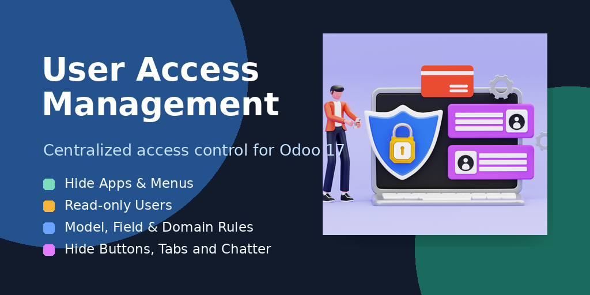

A centralized access studio for Odoo 17 that helps administrators control user permissions, menus, model actions, fields, domains, buttons, tabs, filters, and chatter behavior from one screen.
Hide complete applications, menus, or sub-menus for selected users and companies.
Make selected users read-only and block create, update, delete, archive, and duplicate actions.
Control create, edit, delete, duplicate, and archive options per model.
Set fields as readonly, invisible, or required for specific users.
Create record rules with custom domains for model records.
Hide buttons, tabs, filters, group-by items, and chatter actions where needed.
Create an Access Management rule, select the users and companies, then configure the required tabs. The module applies interface restrictions dynamically and creates technical Odoo security rules where server-side record filtering is required.